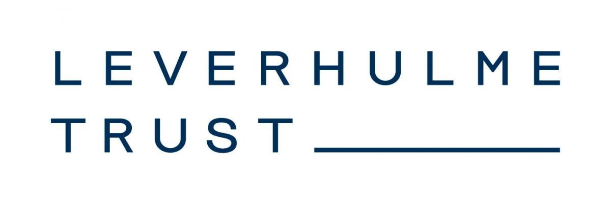

PhD, 2012
Electrical Engineering, Technion
Advisor: Robert Adler

Professor in Mathematical Data Science
I am a Professor in Mathematical Data Science in the School of Mathematical Sciences at Queen Mary University of London, and a Visiting Professor in the Viterbi Faculty of Electrical and Computer Engineering at the Technion.
Electrical Engineering, Technion
Advisor: Robert Adler
Electrical Engineering, Technion
Advisors: Ron Meir and
Yonina Eldar
Mathematics and Computer Science, The Open University of Israel
Current research support.
UKRI AI Hub
2024–2029
2024–2027

2024–2027